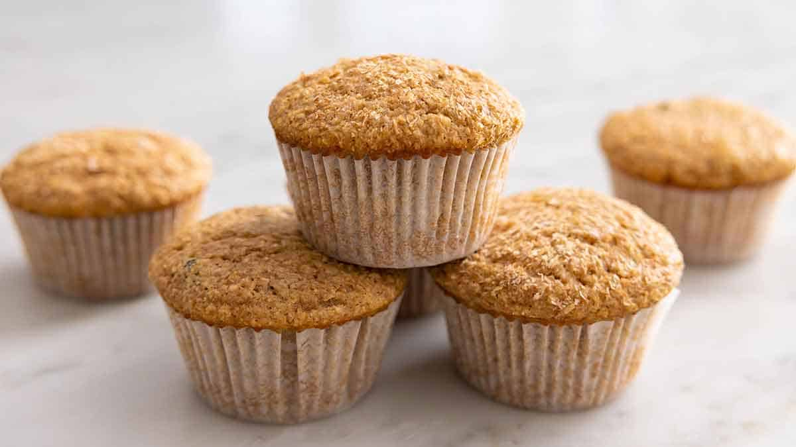

Bran Muffins

Description
An easy bran muffin recipe, perfect snacks for kids and adults alike.
High in fibre and delicious. Ready in 30 minutes. Yields 12 muffins.
Ingredients
- 1 1/2 cups wheat bran
- 1 cup buttermilk
- 1/3 cup vegetable oil
- 2/3 cup brown sugar
- 1 egg
- 1/2 tsp vanilla
- 1 cup all purpose flour
- 1 tsp baking soda
- 1 tsp baking powder
- 1/2 tsp salt
- 1/2 cup raisins, optional
Steps
- Preheat oven to 375°F
- In a large bowl, combine bran and buttermilk. Let stand for 5 minutes
- Stir in vegetable oil, brown sugar, egg, and vanilla
- In a seperate bowl, whisk together flour, baking soda, baking powder, and salt
- Add bran mixture and stir until combined
- Gently fold in raisins and spoon into lined muffin tin
- Bake 15-20 minutes